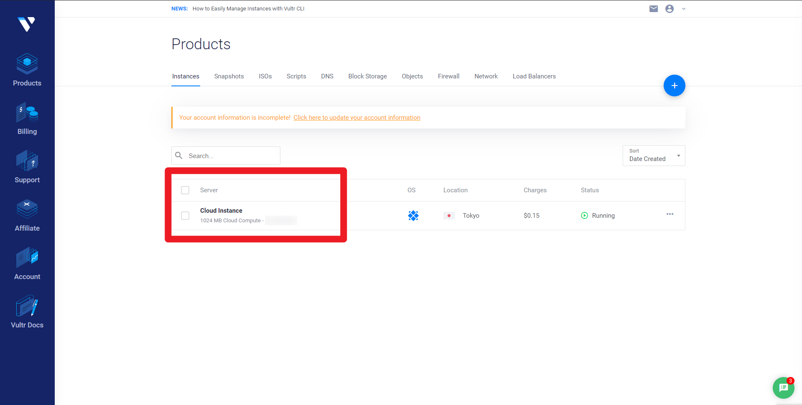
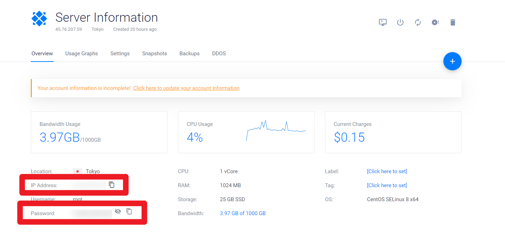
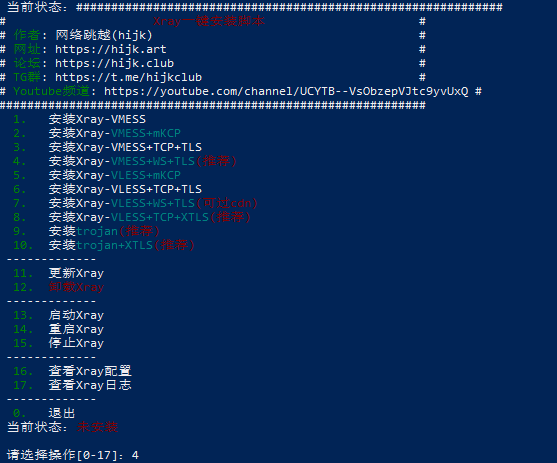
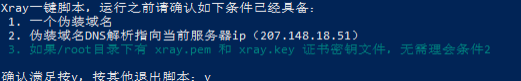
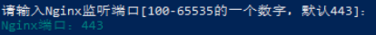
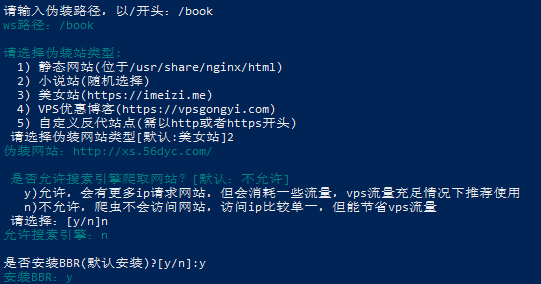

服务端的搭建
工具
获取VPS登陆密码

进入红框页面可获得服务器详细信息

通过SSH登陆
ssh root@服务器ip
#下一步即输入密码
部署服务端
- Xray官方部署脚本
bash <(curl -L https://github.com/XTLS/Xray-install/raw/main/install-release.sh) install
安装完成之后
- 可执行文件xray：/usr/local/bin
- 配置文件：/usr/local/etc/xray
对于各种协议需要使用官方配置示例
在服务器端使用vim/其他工具编辑，或者本地修改后使用
scp -r ./配置文件 root@ip:/usr/local/etc/xray
对应指令
# 运行
systemctl start xray
# 停止
systemctl stop xray
# 重启
systemctl restart xray
# 查看日志
journalctl -xe --no-pager -u xray
官方的配置脚本没有分享码
建议的一键管理脚本
bash <(curl -sL https://s.hijk.art/xray.sh)

选择4，VMESS服务+websockt协议+tls伪装

输入y，已有域名

443为常用端口，选择443

伪装路径应以/开头，可随意填写
伪装站随意
不允许爬虫爬取
安装BBR
最后，将vmess链接复制到V2ray软件中会自动识别